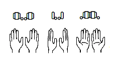
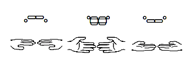

Ориентация обозначается при помощи комбинации двух символов: символа пальцев и символа большого пальца. Вместе они изображают поворот кисти в пространстве так, как её видит говорящий.
Чтобы определить ориентацию ладони в жесте, раскройте руку в конфигурацию в в не двигая запястьем.


Представленные выше символы шрифта соответствуют символам - = Э " . и Ё
{% include keyboard.html highlight="-=Э\".Ё" %}Используйте - = Э " . Ё чтобы указывать ориентацию ладони:
Зачастую жест понятен и без ориентации
{% include lexicon.html key="Не важна" %}Иногда всё же ориентация полезна — она может быть единственным различием между жестами
{% include lexicon.html key="Важна" %} {% include learn_handshapes.html %}Введите только ориентацию для уже известных вам жестов:{% include quiz.html %}